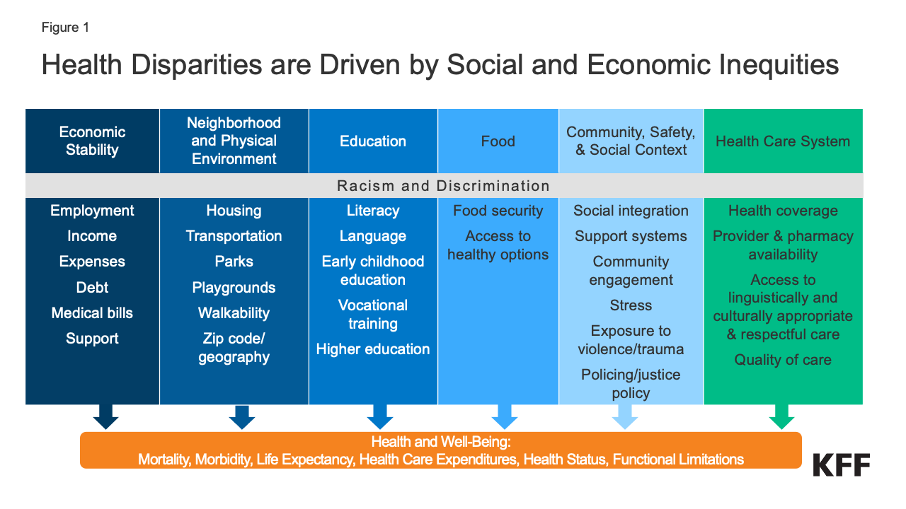

Access to Care: A Right, Not a Privilege
Improving Access to Quality Healthcare Services in the U.S. - Disparities in Access to Medical Services Create Inequalities in Health Outcomes

Healthcare accessibility is a fundamental human right that encompasses the availability, affordability, and quality of healthcare services for all individuals, regardless of their background or socioeconomic status.
Ensuring healthcare accessibility is crucial for promoting public health and reducing health disparities. It involves breaking down barriers, both physical and financial, that prevent people from receiving timely and adequate medical care.
By addressing healthcare accessibility, we can strive for a more equitable and healthier society where everyone has the opportunity to lead a fulfilling and healthy life.
Healthcare accessibility stands as one of the foremost and persistent challenges confronting the United States today. Despite advances in medical technology and healthcare delivery, millions of Americans still struggle to access affordable and timely healthcare services. The issue of healthcare accessibility encompasses various facets, including unequal access to insurance coverage, high healthcare costs, and geographic disparities in healthcare facilities. As a result, it remains a top-ranking concern, not only impacting individual health outcomes but also challenging the overall well-being and equity of the nation's healthcare system.
Healthcare accessibility and health disparities in the United States are closely intertwined and deeply influenced by social and economic inequalities. Economic stability, education, neighborhood and physical environment, access to nutritious food, and community safety all play crucial roles in determining an individual's ability to access healthcare and maintain good health. These social determinants of health are often interconnected, with marginalized communities experiencing greater challenges in all these areas. Additionally, disparities within the healthcare system, such as unequal access to quality care and insurance coverage, contribute to the persistence of health disparities. Addressing these underlying social and economic inequities is essential to achieving equitable healthcare access and reducing health disparities across the nation.
We are dedicated to improving healthcare access for all Americans. Our mission is to create a healthier and more equitable society. Join us in making a difference by signing our petition!
Signing our petition is easy and takes only a moment of your time. Your support can create a healthier future for all. Join us in this important cause. Together, we can make a significant impact.
🖊️ 3 people have signed this petition and support this cause.
🖊️ DJ from Brooklyn supports this.
🖊️ Amy from Queens supports this.
🖊️ Teresa from Harlem supports this.